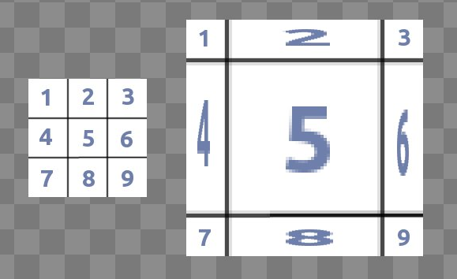

Displayables
Displayable – это объект, который может быть показан пользователю. Displayable-объекты Ren'Py могут использоваться многими способами.
Присвоение имени изображения с помощью оператора
image.Добавление на экран с помощью оператора
addязыка экранов.Присвоение определённым переменным конфигурации.
Присвоение определённым свойствам стиля.
Когда функция или переменная Ren'Py ожидает displayable, ей можно предоставить несколько вещей:
Объект типа Displayable, созданный вызовом одной из функций, приведённых ниже.
Строку, содержащую двоеточие
:. Они редки, но см. раздел префиксы displayable-объектов ниже.Строку, содержащую точку
.. Такая строка интерпретируется функциейImage()как имя файла.Цвет. Цвет может быть задан либо в виде шестнадцатеричной строки цвета в формате "#rgb", "#rgba", "#rrggbb" или "#rrggbbaa", либо в виде объекта
Color, либо в виде кортежа (r, g, b, a), где каждый компонент является целым числом от 0 до 255. Цвета передаются вSolid().Имя изображения. Любая другая строка интерпретируется как ссылка на изображение, определённое с помощью оператора image или автоматически определённое из каталога изображений.
Список. Если предоставлен список, каждый его элемент обрабатывается, как описано ниже, и проверяется на совпадение с именем файла или именем изображения. Если совпадение найдено, обработка списка прекращается, и найденный элемент обрабатывается, как описано выше.
Строки могут содержать одну или несколько подстановок в квадратных скобках, например, "eileen [mood]" или "eileen_[outfit]_[mood].png". Когда задана такая строка, создаётся динамическое изображение. Для динамического изображения выполняется интерполяция текста в начале каждого взаимодействия (например, операторов say и меню). Результирующая строка обрабатывается в соответствии с правилами, приведёнными выше.
Когда строка содержит "[prefix_]", эта подстановка заменяется каждым из префиксов стиля, связанных с текущим displayable-объектом.
Изображения
Наиболее часто используемый displayable – это Image, который загружает файл с диска и отображает его. Поскольку Image используется очень часто, когда строка с именем файла используется в контексте, где ожидается displayable, объект Image создаётся автоматически. Единственный случай, когда необходимо использовать Image напрямую, – это когда вы хотите создать изображение со свойствами стиля.
- Image(filename, *, optimize_bounds=True, oversample=1, dpi=96, mipmap=None, **properties)
Загружает изображение из файла. filename — это строка с именем файла.
- filename
Имя файла изображения, включая расширение.
- optimize_bounds
Если истинно, то в память GPU загружается только та часть изображения, которая находится внутри ограничивающей рамки непрозрачных пикселей. (Единственная причина устанавливать это значение в False — это использование изображения в качестве входных данных для шейдера.)
- oversample
Если это значение больше 1, изображение считается oversampled (с избыточной выборкой), с большим количеством пикселей, чем предполагает его логический размер. Например, если файл изображения имеет размер 2048x2048, а oversample равен 2, то для целей разметки изображение будет рассматриваться как изображение размером 1024x1024.
- dpi
DPI для SVG-изображения. По умолчанию равно 96, но его можно увеличить, чтобы отрендерить SVG крупнее, и уменьшить, чтобы отрендерить его меньше.
- mipmap
Если установлено в "auto", то mipmap-уровни генерируются для изображения, только если игра масштабируется до размера менее 75% от её стандартного размера. Если установлено в True, mipmap-уровни генерируются всегда. Если установлено в False, mipmap-уровни никогда не генерируются. Если установлено в None, то используется значение по умолчанию из config.mipmap.
# Эти две строки эквивалентны.
image logo = "logo.png"
image logo = Image("logo.png")
# Использование Image позволяет нам указать позицию по умолчанию
# как часть изображения.
image logo right = Image("logo.png", xalign=1.0)
Мы рекомендуем использовать четыре формата файлов изображений:
AVIF
WEBP
PNG
JPG
И один формат векторных изображений:
SVG
Также поддерживаются неанимированные файлы GIF и BMP, но их не следует использовать в современных играх.
Загрузка Image из файла на диске и его декодирование для отображения на экране занимает значительное время. Хотя это время измеряется десятыми или сотыми долями секунды, продолжительность процесса загрузки достаточно велика, чтобы помешать достижению приемлемой частоты кадров и вызвать раздражение у пользователя.
Поскольку Image имеет фиксированный размер и не изменяется в ответ на ввод, состояние игры или размер доступной области, его можно загрузить до того, как он понадобится, и поместить в область памяти, известную как кеш изображений. Как только Image декодирован и находится в кеше, его можно быстро вывести на экран.
Ren'Py пытается предсказать, какие изображения будут использоваться в будущем, и загружает их в кеш изображений до того, как они понадобятся. Когда в кеше требуется место для других изображений, Ren'Py удаляет изображения, которые больше не используются.
По умолчанию Ren'Py прогнозируемо кеширует данные изображений
объёмом до 8 экранов. (Если ваш экран имеет разрешение 800x600, то объём
данных одного экрана – это одно изображение 800x600, два изображения
400x600 и так далее). Это значение можно изменить с помощью переменной
конфигурации config.image_cache_size.
Хотя точный объём зависит от деталей реализации и существует значительная дополнительная нагрузка, как правило, каждый пиксель в кеше изображений потребляет 4 байта оперативной памяти и 4 байта видеопамяти.
SVG-изображения
Ren'Py поддерживает многие изображения SVG 1.0, используя библиотеку NanoSVG. Некоторые неподдерживаемые функции включают:
Текстовые элементы игнорируются. Если текст преобразован в контур, он будет отображён.
Встроенные растровые изображения игнорируются.
Скрипты игнорируются.
Анимации игнорируются.
Список функций, поддерживаемых NanoSVG, можно найти здесь.
Рекомендуется преобразовывать всё, что в SVG-изображении не будет отображаться должным образом, в контуры.
Ren'Py будет отображать SVG-изображения так, как если бы виртуальный экран имел разрешение 96 DPI. Если окно будет увеличено или уменьшено, SVG-изображение будет масштабировано соответственно, и будет использован оверсемплинг, чтобы гарантировать, что изображение будет отображено в правильном виртуальном размере.
Это гарантирует, что SVG будет отображаться чётко, если его не масштабировать.
Изображе-подобные Displayable-объекты
Мы называем эти displayable-объекты изображе-подобными, потому что они занимают прямоугольную область экрана и не реагируют на ввод. Они отличаются от обычных изображений тем, что изменяют свой размер для заполнения области (Frame, Tile и Solid) или позволяют пользователю указывать их размер (Composite, Crop, Null). Они не являются манипуляторами изображений.
Изображе-подобные displayable-объекты принимают свойства стиля для позиционирования.
- class AlphaMask(child, mask, invert=False, **properties)
Этот отображаемый объект берёт свои цвета из child, а его альфа-канал – из произведения альфа-каналов child и mask. В результате получается отображаемый объект, имеющий те же цвета, что и child, прозрачный там, где child или mask прозрачны, и непрозрачный там, где child и mask непрозрачны.
Параметры child и mask могут быть любыми отображаемыми объектами. Размер AlphaMask равен размеру child. Параметр invert может использоваться для инвертирования альфа-канала маски.
Обратите внимание, что этот объект принимает другие аргументы, чем
im.AlphaMask(), который использует красный канал маски.
- class Borders(left, top, right, bottom, pad_left=0, pad_top=0, pad_right=0, pad_bottom=0)
Этот объект предоставляет информацию о размерах границ и замощении для
Frame(). Он также может предоставлять информацию об отступах, которая может быть передана свойству стиляpaddingокна или фрейма.- left, top, right, bottom
Эти параметры задают размер отступов, используемых фреймом, и добавляются к отступу с каждой стороны. Они должны быть равны нулю или положительному целому числу.
- pad_left, pad_top, pad_right, pad_bottom
Эти значения добавляются к отступу с каждой стороны и могут быть положительными или отрицательными. (Например, если left равно 5, а pad_left равно -3, конечный отступ будет 2.)
Информация об отступах предоставляется через поле:
- padding
Это кортеж из четырёх элементов, содержащий отступы для каждой из четырёх сторон.
- Composite(size, *args, **properties)
Создаёт новый отображаемый объект размера size путём композиции других отображаемых объектов. size – это кортеж (ширина, высота).
Остальные позиционные аргументы используются для размещения изображений внутри Composite. Оставшиеся позиционные аргументы должны идти группами по два, где первый элемент каждой группы – это кортеж (x, y), а второй элемент группы – это отображаемый объект, который компонуется в этой позиции.
Отображаемые объекты компонуются от заднего к переднему.
image eileen composite = Composite( (300, 600), (0, 0), "body.png", (0, 0), "clothes.png", (50, 50), "expression.png")
- Crop(rect, child, **properties)
Создаёт отображаемый объект путём обрезки child до rect, где rect – это кортеж (x, y, ширина, высота).
image eileen cropped = Crop((0, 0, 300, 300), "eileen happy")
- class DynamicImage(name)
DynamicImage – это отображаемый объект, к которому применяется текстовая интерполяция для получения строки, задающей новый отображаемый объект. Такая интерполяция выполняется в начале каждого взаимодействия.
- class Flatten(child, drawable_resolution=True, **properties)
Этот объект "сплющивает" child, который может состоять из нескольких текстур, в одну текстуру.
Некоторые операции, такие как свойство alpha transform, применяются к каждой текстуре, составляющей отображаемый объект, что может привести к неверным результатам, когда текстуры перекрываются на экране. Flatten создаёт одну текстуру из нескольких, что может предотвратить эту проблему.
Flatten – относительно затратная операция, поэтому её следует использовать только при крайней необходимости.
- drawable_resolution
По умолчанию имеет значение true, что обычно является правильным выбором, но может привести к тому, что результирующая текстура при масштабировании будет иметь артефакты, отличные от тех, что были у составляющих её текстур. Установка этого параметра в False изменит артефакты, что в некоторых случаях может выглядеть более приятно.
- class Frame(image, left=0, top=0, right=None, bottom=None, *, tile=False, **properties)
Отображаемый объект, который изменяет размер изображения для заполнения доступной области, сохраняя при этом ширину и высоту его границ. Часто используется в качестве фона окна или кнопки.

Использование фрейма для изменения размера изображения вдвое.
- image
Манипулятор изображений, размер которого будет изменён этим фреймом.
- left
Размер границы с левой стороны. Это также может быть объект
Borders(), и в этом случае он используется вместо других параметров.- top
Размер границы сверху.
- right
Размер границы с правой стороны. Если None, по умолчанию принимает значение left.
- bottom
Размер границы снизу. Если None, по умолчанию принимает значение top.
- tile
Если установлено в True, для изменения размера секций изображения используется замощение, а не масштабирование. Если установлено в строку "integer", в каждом направлении будет использоваться ближайшее целое число плиток. Этот набор целых плиток затем будет увеличен или уменьшен для соответствия требуемой области.
# Изменяем размер фона текстового окна, если он слишком мал. init python: style.window.background = Frame("frame.png", 10, 10)
- class Null(width=0, height=0, **properties)
Отображаемый объект, который создаёт на экране пустой бокс. Размер бокса контролируется параметрами width и height. Может использоваться, когда отображаемый объект требует потомка, но подходящего потомка нет, или в качестве разделителя внутри бокса.
image logo spaced = HBox("logo.png", Null(width=100), "logo.png")
- class Solid(color, **properties)
Отображаемый объект, который заполняет отведённую ему область цветом color.
image white = Solid("#fff")
- class Tile(child, style='tile', **properties)
Заполняет child плиткой до тех пор, пока он не заполнит область, выделенную для этого отображаемого объекта.
image bg tile = Tile("bg.png")
Текстовые Displayable-объекты
Динамические Displayable-объекты
Динамические displayable-объекты отображают дочерний displayable в зависимости от состояния игры.
Обратите внимание, что эти динамические displayable-объекты всегда отображают свое текущее состояние. Из-за этого динамический displayable не будет участвовать в переходе. (Или, точнее, он будет отображать одно и то же как в старом, так и в новом состоянии перехода.)
По замыслу, динамические displayable-объекты предназначены для вещей, которые меняются редко и когда определённое таким образом изображение находится за пределами экрана (например, система кастомизации персонажа). Они не предназначены для вещей, которые меняются часто, например, для эмоций персонажа.
- ConditionSwitch(*args, predict_all=None, **properties)
Это отображаемый объект, который изменяет своё содержимое в зависимости от условий Python. Позиционные аргументы должны быть указаны группами по два, где каждая группа состоит из:
Строки, содержащей условие Python.
Отображаемого объекта для использования, если условие истинно.
Отображается объект для первого истинного условия; по крайней мере одно условие всегда должно быть истинным.
Используемые здесь условия не должны иметь внешне видимых побочных эффектов.
- predict_all
Если True, все возможные отображаемые объекты будут предсказаны, когда отображаемый объект будет показан. Если False, предсказывается только текущее условие. Если None, используется
config.conditionswitch_predict_all.
image jill = ConditionSwitch( "jill_beers > 4", "jill_drunk.png", "True", "jill_sober.png")
- class DynamicDisplayable(function, *args, **kwargs)
Отображаемый объект, который может изменять своего потомка на основе функции Python в течение взаимодействия. Он не принимает никаких свойств, так как его компоновка контролируется свойствами дочернего отображаемого объекта, который он возвращает.
- function
Функция, которая вызывается со следующими аргументами:
Время, в течение которого отображаемый объект был показан.
Время, в течение которого любой отображаемый объект с тем же тегом был показан.
Любые позиционные или именованные аргументы, переданные в DynamicDisplayable.
и должна возвращать кортеж (d, redraw), где:
d – это отображаемый объект для показа.
redraw – это максимальное время ожидания перед повторным вызовом функции, или None, если не требуется повторный вызов функции до начала следующего взаимодействия.
function вызывается в начале каждого взаимодействия.
В качестве особого случая function также может быть строкой Python, которая вычисляется в отображаемый объект. В этом случае функция выполняется один раз за взаимодействие.
# Показывает обратный отсчёт от 5 до 0, обновляя его каждую десятую # секунды до истечения времени. init python: def show_countdown(st, at): if st > 5.0: return Text("0.0"), None else: d = Text("{:.1f}".format(5.0 - st)) return d, 0.1 image countdown = DynamicDisplayable(show_countdown)
- ShowingSwitch(*args, predict_all=None, **properties)
Это отображаемый объект, который изменяет своё содержимое в зависимости от изображений, показанных на экране. Позиционные аргументы должны быть указаны группами по два, где каждая группа состоит из:
Строки, задающей имя изображения, или None для обозначения значения по умолчанию.
Отображаемого объекта для использования, если условие истинно.
Должно быть указано изображение по умолчанию.
- predict_all
Если True, все возможные отображаемые объекты будут предсказаны, когда отображаемый объект будет показан. Если False, предсказывается только текущее условие. Если None, используется
config.conditionswitch_predict_all.
Одно из применений ShowingSwitch – это изменение изображений в зависимости от текущей эмоции персонажа. Например:
image emotion_indicator = ShowingSwitch( "eileen concerned", "emotion_indicator concerned", "eileen vhappy", "emotion_indicator vhappy", None, "emotion_indicator happy")
Слоевые Displayable-объекты
Слоевые displayable-объекты отображают содержимое слоя в зависимости
от состояния игры. Они предназначены для использования с
config.detached_layers.
Обратите внимание, что, подобно динамическим displayable-объектам, отображаемые слои всегда показывают своё текущее состояние. Из-за этого содержимое слоевого displayable-объекта не будет участвовать в переходе, если только этот переход не нацелен на отображаемый слой.
- class Layer(layer, *, clipping=True, **properties)
Это позволяет отображать слой как отображаемый объект на другом слое. Предназначено для использования с отсоединёнными слоями.
Попытка отобразить слой на самом себе не поддерживается.
- layer
Слой для отображения.
- clipping
Если False, содержимое слоя может выходить за его границы, в противном случае всё, что выходит за границы, будет обрезано.
Запись в config.layer_clipping приведёт к тому, что этот параметр будет проигнорирован, и обрезка будет происходить в соответствии с указанным в этой конфигурации.
# Новый отсоединённый слой для содержимого трансляции.
define config.detached_layers += [ "broadcast" ]
# Слоевой displayable для представления телевизора и просмотра слоя broadcast.
image tv = Window(Layer("broadcast"), background='#000', padding=(10, 10), style="default")
image living_room = Placeholder('bg', text='living_room')
image studio = Solid('7c7')
image eileen = Placeholder('girl')
label example:
pause
# Настраиваем сцену трансляции.
scene studio onlayer broadcast
with None
# Начинаем новую сцену в гостиной.
scene living_room
# Показываем телевизор в правом нижнем углу экрана.
show tv:
align (.75, .75) zoom .3
# Показываем Эйлин в трансляции.
show eileen onlayer broadcast
# Переход с dissolve в гостиную, пока Эйлин въезжает на экран телевизора справа.
with {'master': dissolve, 'broadcast': moveinright}
pause
Контейнеры компоновки и сетки
Контейнеры компоновки – это displayable-объекты, которые размещают свои дочерние элементы на экране. Они могут располагать дочерние элементы по горизонтали или вертикали, либо использовать стандартный алгоритм позиционирования.
Displayable-объекты-контейнеры принимают любое количество позиционных и именованных аргументов. Позиционные аргументы должны быть displayable-объектами, которые добавляются в контейнер как дочерние элементы. Именованные аргументы – это свойства стиля, которые применяются к контейнеру.
Контейнеры принимают свойства стиля для позиционирования и свойства стиля для контейнеров.
- Fixed(*args, **properties)
Бокс, заполняющий весь экран. Его элементы располагаются от заднего к переднему, а их положение контролируется свойствами позиции.
- HBox(*args, **properties)
Бокс, располагающий свои элементы слева направо.
- VBox(*args, **properties)
Макет, располагающий свои элементы сверху вниз.
# Отобразить два логотипа, один слева от другого.
image logo hbox = HBox("logo.png", "logo.png")
# Отобразить два логотипа, один над другим.
image logo vbox = VBox("logo.png", "logo.png")
# Отобразить два логотипа. Поскольку по умолчанию оба они
# находятся в верхнем левом углу экрана, нам нужно использовать Image,
# чтобы разместить эти логотипы на экране.
image logo fixed = Fixed(
Image("logo.png", xalign=0.0, yalign=0.0),
Image("logo.png", xalign=1.0, yalign=1.0))
Компоновка Grid отображает свои дочерние элементы в виде сетки
на экране. Она принимает
свойства стиля для позиционирования
и свойство стиля spacing.
- Grid(cols, rows, *args, **properties)
Располагает отображаемые объекты в сетке. Первые два позиционных аргумента – это количество столбцов и строк в сетке. За ними должны следовать columns * rows позиционных аргументов, задающих отображаемые объекты, которые заполняют сетку.
Эффекты
Эти displayable-объекты используются для создания определённых визуальных эффектов.
- AlphaBlend(control, old, new, alpha=False)
Этот переход использует отображаемый объект control (почти всегда какой-либо анимированный transform) для перехода от одного отображаемого объекта к другому. Transform оценивается. Отображаемый объект new используется там, где transform непрозрачен, а old – там, где он прозрачен.
- alpha
Если true, изображение смешивается с тем, что находится за ним. Если false, (по умолчанию) изображение непрозрачно и перезаписывает то, что находится за ним.
Манипуляторы изображений
Манипуляторы изображений – это исторический тип displayable-объектов, которые применяют преобразования или операции исключительно к другим изображениям или манипуляторам изображений, исключая другие типы displayable-объектов.
Манипулятор изображений может быть использован в любом месте, где может
быть использован displayable, но не наоборот. Image() является
разновидностью манипулятора изображений, поэтому Image может
использоваться везде, где требуется манипулятор изображений.
Их использование является историческим. Ряд манипуляторов изображений,
которые были документированы в далёком прошлом, больше не следует
использовать, так как они страдают от врождённых проблем, и в целом
(за исключением im.Data()) displayable Transform()
предоставляет аналогичную функциональность, исправляя при этом проблемы.
Список манипуляторов изображений см. в документации по манипуляторам изображений.
Заполнители
Displayable Placeholder используется для отображения фоновых или персонажных изображений по необходимости. Заполнители используются автоматически, когда в режиме разработчика используется неопределённое изображение. Displayable-объекты Placeholder также можно использовать вручную, когда стандартные варианты не подходят.
# По умолчанию будет использоваться заполнитель для девушки.
image sue = Placeholder("boy")
label start:
show sue angry
"Sue" "How do you do? Now you gonna die!"
- class Placeholder(base=None, full=False, flip=None, text=None, **properties)
Этот displayable может быть использован для отображения временного персонажа (плейсхолдера) или фона.
- base
Тип отображаемого изображения. Должен быть одним из следующих:
- 'bg'
Для отображения фона-плейсхолдера. В настоящее время это заливает экран светло-серым цветом и отображает имя изображения в верхней части экрана.
- 'boy'
Отображает плейсхолдер мужского типа с именем изображения на груди.
- 'girl'
Отображает плейсхолдер женского типа с именем изображения на груди.
- None
Пытается автоматически определить тип используемого изображения. Если имя изображения начинается с "bg", "cg" или "event", используется 'bg'.
В противном случае используется плейсхолдер 'girl'.
- full
Если true, используется спрайт в полный рост. В противном случае, используется спрайт 3/4.
- flip
Если true, спрайт отражается по горизонтали.
- text
Если задан, на плейсхолдере не будет отображаться никакой другой текст, кроме этого. Если не задан, текст будет отражать инструкцию show, которая использовалась для его отображения.
Префиксы displayable-объектов
Префиксы displayable-объектов позволяют создателю определять свои
собственные displayable-объекты и ссылаться на них в любом месте, где в
Ren'Py можно использовать displayable. Префиксный displayable – это строка
с двоеточием. Префикс находится слева от двоеточия, а аргумент – всё,
что справа от него. Переменная config.displayable_prefix сопоставляет
префикс с функцией. Функция принимает аргумент и возвращает либо
displayable, либо None.
Например, этот код делает так, что префикс big возвращает изображение, которое в два раза больше оригинала.
init -10 python:
def embiggen(s):
return Transform(s, zoom=2)
config.displayable_prefix["big"] = embiggen
init -10 гарантирует, что префикс будет определён до любых изображений,
которые его используют. Затем префикс можно использовать для определения
изображений:
image eileen big = "big:eileen happy"
или в любом другом месте, где требуется displayable.
См. также
Отображение изображений: основы того, как заставить все эти displayable-объекты появиться на экране.